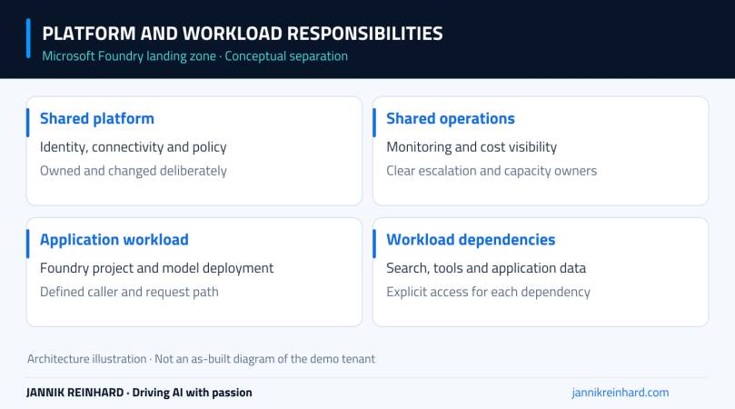
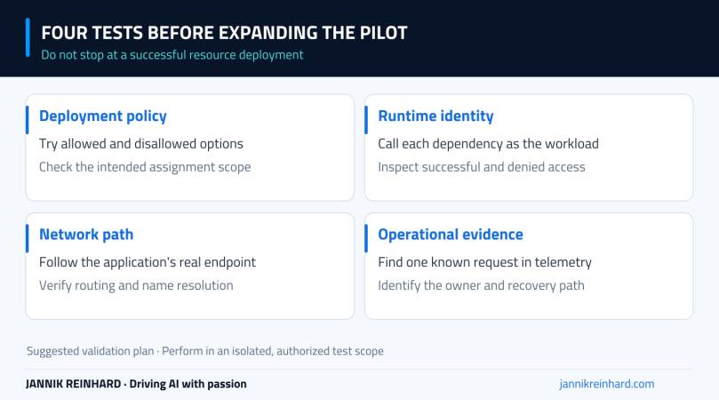

A Microsoft Foundry landing zone starts with a question that the playground cannot answer: who owns the services around the agent? Someone needs to decide how identities, networks, shared connections, monitoring and deployment policies fit together.
In this episode, I move between the Foundry and Azure portals to look at those decisions. It is an architecture and configuration walkthrough, not an end-to-end deployment of a new landing zone. Watch the episode first, then use the notes as a review guide for your own environment.
Video language: German · Duration: 11:48. Video originally published 19 August 2026; this written companion was added on 22 September 2026.
A project is not the whole architecture
I start with the relationship between a Foundry project and its parent resource. The project is where a developer works, but some decisions sit above it or in connected Azure services. Those decisions still affect the application even when they are not the focus of the Build experience.
The recording reviews connected resources and the configuration around the project. Application Insights is connected in the demonstrated environment. Other services and connection options are discussed as architectural choices; their presence in a menu does not mean that every integration has been deployed.
If you are still at the first-project stage, my Foundry setup guide covers the initial structure. This episode asks what has to surround that structure when several teams or applications start using it.

A conceptual separation of platform and workload responsibilities, not a claim that this complete topology was deployed in the video.
Decide what should be shared
A shared capability can reduce repeated setup, but it also creates a dependency. If several applications use the same gateway, connection or monitoring destination, a change there can affect more than one team.
I would document three things for each shared component: who owns it, which workloads depend on it, and how a change is tested before it reaches those workloads. “The platform team manages it” is not enough if nobody knows where to report a failure or request a change.
This is also why I would not copy a diagram into production without reviewing it. A small internal assistant and a customer-facing service may need different availability, isolation and operational arrangements, even if both use Foundry.
Microsoft’s Foundry landing-zone baseline architecture is a useful design reference. Use it to identify the decisions you need to make, rather than treating every component as mandatory for every experiment.
An AI gateway needs an actual request path
The recording opens the AI gateway configuration experience and discusses API Management as a central capability. It does not provision and verify a working gateway. That distinction matters when someone asks whether all model traffic is already controlled centrally.
Before making that claim, I would follow a real application request: which endpoint does the application call, how does the gateway authenticate the caller, which backend receives the request, and which logs show the result? I would then check whether a direct path to the backend is still possible.
A gateway can only govern traffic that actually passes through it. A diagram showing a gateway between two boxes is not evidence that an application’s configured endpoint uses that route.
For a pilot, I would start with one application and one documented path. That makes it easier to inspect authentication failures, limits and downstream errors before several teams depend on the same gateway configuration.
Review identity and network settings together
In Azure, I look at resource-level options such as identity, networking, encryption and diagnostics. These are related, but they solve different problems. Authentication answers who is calling; network configuration determines which paths are available; diagnostics help establish what happened.
Turning on an identity does not automatically grant it access to every connected service. Likewise, a private endpoint does not solve name resolution or prove that a client can reach the correct address. Each dependency needs its own access and connectivity checks.
I would record the intended caller and the target service for every connection. That is more useful than a generic statement that the environment “uses managed identities.” It also gives the operations team a starting point when a request works in the portal but fails in the application.
For more detail on the surrounding controls, see my secure Microsoft Foundry guide. The video here focuses on where the architecture decisions appear and how they fit together.
Govern model deployments with explicit scope
Toward the end of the episode, I review Azure Policy options for permitted model deployments and show where the model asset identifier can be found. An allowed-model policy should use the identifier expected by that policy, not a friendly display name copied from a slide.
Scope is equally important. A policy assigned to a subscription, resource group or management group can affect very different workloads. I would begin in an isolated test scope and review the policy definition’s effect, parameters and existing resources before expanding it.
The walkthrough demonstrates the assignment choices; it does not include a complete allow-and-deny deployment test. For that follow-up, try one permitted deployment and one intentionally disallowed deployment in the test scope. Check the policy evidence for both results.

Four separate tests that turn an architecture discussion into evidence.
Monitoring, quota and cost need an owner
The episode also looks at quota and monitoring. Treat quota as a capacity constraint to investigate for the specific service, region and deployment type, not as one generic number for the whole architecture.
I would agree on a few operational questions before a pilot grows: who notices throttling, who can approve more capacity, where failures are investigated, and which workload owns the resulting spend? Connecting Application Insights is a useful step, but the next step is producing an identifiable request and finding its telemetry.
My next episode on tracing and evaluation follows that operational thread. It shows why a plausible answer and a healthy-looking dashboard can still hide a problem in the agent’s tool path.
The landing zone is useful when it makes these responsibilities clear. Start with the smallest architecture you can explain, test the actual paths, and add shared services deliberately. That is a stronger foundation than collecting every available Azure component before the first workload exists.
Stay healthy, Cheers Jannik